Yapay zekâ düşünmüyor, hissetmiyor, bilmiyor. Peki ne yapıyor?
4 sihirli kelime grubu. Aynı fikir, çok daha iyi sonuç.
Kendi avatarın + 12'li WhatsApp sticker paketin. Bugün, bu derste.
Model milyonlarca kitabı, siteyi, konuşmayı "okudu" ve tek bir şeyde ustalaştı: bir cümlenin devamında en olası kelime hangisi?
Sonra o kelimeyi de hesaba katıp bir sonrakini tahmin eder. Kelime kelime, tahmin üstüne tahmin — koca bir paragraf çıkar.
Ona "düşünüyor" demeyeceğiz.
"Çok iyi tahmin ediyor" diyeceğiz.
Model bir heykeltıraş gibi: elinde koca bir gürültü taşı var. Senin kelimelerin keski — her vuruşta fazlalığı yontuyor.
Tahmin yapan yapay zekâ programı.
Modele verdiğimiz tarif, talimat.
Modelin promptuna karşılık verdiği çıktı.
Çıktının görünüş dili: karikatür, piksel-art, 3D…
Görsel modelin gürültüden adım adım resme geçmesi.
Hayır — çünkü başlangıç gürültüsü her seferinde rastgele. Model kelimelerini de her seferinde birazcık farklı yorumlar.
Model tek tek parmak saymaz; "el genelde şöyle görünür" tahminini yapar. El, diş, küçük yazı gibi çok detaylı yerlerde tahmini zayıflar.
Orkestra şefi. Tek arayüzden farklı enstrümanları çağırıyoruz: metin modeli, görsel modeli. Ayrı ayrı sitelere girmiyoruz.
Yüklediğin bir fotoğrafın nereye gittiğini, nerede saklandığını ve kimin göreceğini bilemeyiz. Ama kelimelerle tarif ettiğinde aynı sonucu alırsın — riski sıfırlarsın.
Kendini yazıyla tarif et: saç, gözlük, favori kıyafet ve renk, ifade. Fotoğraf yok.
Tarifini prompt'a çevir, 2–3 çıktı üret. Beğenmediysen kelime ekle.
Aynı tarifi 3 stilde üret: karikatür, piksel-art, 3D. En sevdiğini seç.
Seçtiğin avatardan farklı ifadeler üret, arka planı temizle, WhatsApp'a ekle!
Kural: 40. dakikada ürün "mükemmel" olmak zorunda değil — çalışır olmalı. Kalanı evde geliştirirsin.
Çıktı istediğin gibi olmadı mı? Araç kötü değil — tarif eksik. Tek bir kelime ekle ve tekrar dene: neon? yakın plan? neşeli?
Aynı avatarı koru, sadece ifadeyi değiştir — paket bir aileye benzesin.
Arka planı temizle. Aracın hazır "arka plan sil" düğmesini kullan.
Paketi indir, WhatsApp'a ekle ve ilk sticker'ı ailene gönder.